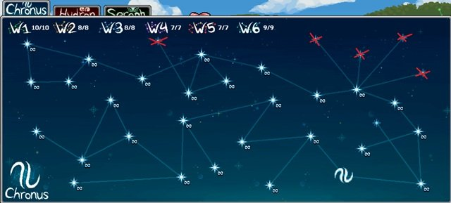
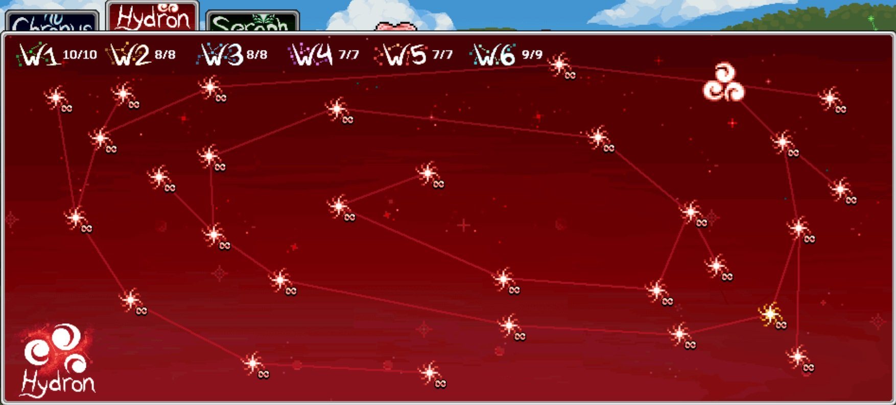
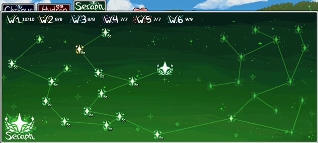

Idleon Star Sign 기본 개요
- 캐릭터를 생성할 때 초기 Star Sign을 설정하며, 이후 변경할 수 있습니다.
- Star Sign을 변경하거나 새로운 것을 해금하려면 W1 큰 나무 꼭대기(Where the Branch Ends)에 있는 망원경에 도달해야 합니다. 해금 후에는 빠른 참조 메뉴를 통해 변경할 수 있으므로 매번 해당 위치를 방문할 필요가 없습니다.
- Star Sign은 계정 전체 기준으로 해금되지만, 각 캐릭터별로 개별 설정됩니다.
- 새로운 Star Sign을 해금하려면 특정 게임 맵에서 발견되는 별자리 챌린지를 완료해야 합니다.
- 초기에는 Star Sign을 한 번에 하나만 장착할 수 있지만, 이후 최대 2개, 그다음 3개까지 장착할 수 있습니다.
- 일부 Star Sign은 장착 시 긍정적 효과와 부정적 효과를 동시에 제공하여 플레이어가 트레이드오프를 고려해야 합니다.
- World 4에서는 현재 해금된 모든 무한 Star Sign의 효과를 두 배로 만드는 실험실 칩을 획득할 수 있습니다.
- 이 무한 Star Sign은 World 4의 Rift에서도 해금되며, 해금된 모든 Star Sign이 World 4의 빛나는 펫 육종 레벨(Squirrel, Piggo, Glublin, Sir Stache, Penguin, Bop Box)에 따라 활성화됩니다. 이 경우 해당되는 부정적 효과도 제거되며, 위에서 언급한 실험실 메커니즘으로 활성화된 Star Sign을 두 배로 만들 수 있으므로 올바른 옵션 선택이 여전히 중요합니다.
- 현재 플레이어들은 포인트를 충분히 모아 모든 Star Sign을 해금할 수 있습니다. 단, 진행을 최적화하고 포인트를 아끼기 위해 효과가 제한적인 일부 Star Sign은 무시하는 것이 권장됩니다.

초반 최고의 Star Sign
Idleon 계정이나 새 캐릭터를 처음 시작할 때 4가지 Star Sign 중에서 선택할 수 있습니다.
- The Book Worm (클래스 경험치 1% 증가 + WIS 3)
- The Buff Guy (총 데미지 1% 증가 + STR 3)
- The Fuzzy Dice (탤런트 포인트 +3 + LUK 3)
- Flexo Bendo (이동 속도 2% 증가 + AGI 3)

초반에 권장하는 최고의 Star Sign은 The Fuzzy Dice입니다. 이 옵션은 약 캐릭터 레벨 1 수준의 파워에 해당하는 탤런트 포인트 3개를 추가 제공하며, LUK은 첫 번째 클래스 업그레이드 이전 초급 클래스 단계에서 데미지와 Accuracy(명중률)에 소폭의 보너스를 줍니다.
Star Sign은 나중에 변경할 수 있으므로 이미 다른 것을 선택했더라도 장기적으로 계정에 눈에 띄는 영향을 주지는 않습니다.
전체 최고의 Star Sign
아래 추천 목록은 우선순위 순으로 나열되어 있으므로, 사용 가능한 Star Sign과 현재 장착 가능한 개수에 따라 상단부터 아래로 선택하면 됩니다. 개인의 진행 상황에 따라 최적의 Star Sign이 다를 수 있지만, 무한 Star Sign을 해금하고 Silkrode Nanochip으로 두 배 효과를 받기 전까지는 일반적인 가이드로 활용할 수 있습니다.
AFK Fighting (AFK 전투)
전투 AFK 획득량과 몬스터 리스폰에 집중합니다.
| Star Sign | 효과 | 코스모스 위치 |
|---|---|---|
| The Forsaken* | 총 HP -80%, 방어력 -50%, 전투 AFK 획득량 +6% | Chronus |
| S. Snoozer Major | 전투 AFK 획득량 +4% | Hydron |
| Silly Snoozer | 전투 AFK 획득량 +2% | Chronus |
| Grim Reaper Major | 몬스터 리스폰율 +4% | Hydron |
| Grim Reaper | 몬스터 리스폰율 +2% | Chronus |
| Killian Maximus^ | 티어당 멀티킬 3% | Seraph |
*부정적인 HP/방어력 패널티가 특정 몬스터에서 AFK를 방해하지 않는 경우에만 사용
^멀티킬 티어가 높을 경우 리스폰율이나 AFK 획득량보다 강할 수 있음
Active Fighting (액티브 전투)
목표에 따라 데미지나 기타 유틸리티(드롭률 또는 경험치)에 집중하여 수익을 극대화합니다.
| Star Sign | 효과 | 코스모스 위치 |
|---|---|---|
| Druipi Major | 드롭 희귀도 +12% | Seraph |
| Pirate Booty | 드롭 희귀도 +5% | Chronus |
| Activelius | 액티브 전투 시 클래스 경험치 +15% | Chronus |
| Beanbie Major* | 황금 음식 보너스 +20% | Seraph |
| Damarian Major | 총 데미지 25% | Seraph |
| The Bulwark^ | 총 데미지 +20%, 이동 속도 -12% | Hydron |
| The Overachiever | 총 데미지 +15%, 전투 AFK 획득량 -7% | Hydron |
| The Fiesty | 총 데미지 +6% | Hydron |
| Fatty Doodoo^ | 이동 속도 -3%, 방어력 +5%, 총 데미지 +2% | Chronus |
| The Buff Guy | 총 데미지 +1%, STR +3 | Chronus |
*보유한 황금 음식에 따라 효과가 달라짐
AFK Skilling (일반) — AFK 스킬링
스킬링 활동에 따라 효율, 스킬 AFK 획득량, 또는 스킬 경험치에 집중합니다.
| Star Sign | 효과 | 코스모스 위치 |
|---|---|---|
| Comatose Major | 스킬 AFK 획득량 +4% | Hydron |
| The Big Comatose | 스킬 AFK 획득량 +2% | Chronus |
| The OG Skiller | 소지 한도 +5%, 스킬 AFK 획득량 +1%, 전체 스킬 솜씨 +2% | Chronus |
| Mount Eaterest | 음식 미소모 확률 +10%, 전체 음식 효과 +15% | Chronus |
| Beanbie Major | 황금 음식 보너스 +20%* | Seraph |
| Sir Savvy Major | 스킬 경험치 획득 +6% | Hydron |
*보유한 황금 음식에 따라 효과가 달라짐
AFK Skilling (특정 스킬) — 스킬별 특화
위의 일반 스킬링 Star Sign에 더해, 특정 스킬에 집중된 것들이 있으며 해당 스킬에서는 최우선으로 사용해야 합니다.
| Star Sign | 효과 | 코스모스 위치 | 사용 스킬 |
|---|---|---|---|
| Dwarfo Beardus | 채광 효율 +5%, 다중 광석 확률 +20% | Chronus | Mining |
| Hipster Logger | 벌목 효율 +5%, 다중 통나무 확률 +20% | Chronus | Chopping |
| Pie Seas | 낚시 효율 +5%, 다중 물고기 확률 +20% | Chronus | Fishing |
| Shoe Fly | 포획 효율 +5%, 다중 벌레 확률 +20% | Chronus | Catching |
| Trapezoidburg | 함정당 크리터 +20%, 함정 효율 +10% | Hydron | Trapping |
| Preys Bea | 숭배 효율 +15%, 숭배 경험치 +15% | Hydron | Worship |
| Gordonius Major | 요리 속도 +15% (곱연산!) | Hydron | Cooking |
| Scienscion | 실험실 경험치 획득 +20% | Hydron | Laboratory |
| Artifosho | 유물 발견 확률 +15% (곱연산) | Hydron | Sailing |
| C. Shanti Minor | 항해 속도 +20% | Hydron | Sailing |
| Divividov | 신성 경험치 +30% | Hydron | Divinity |
| Cropiovo Minor | 농업 레벨당 작물 진화 확률 +3% | Seraph | Farming |
| Fabarmi | 농업 경험치 +20% | Seraph | Farming |
| O.G. Signalais | OG 확률 +15% | Seraph | Farming |
| S. Tealio | 닌자 쌍둥이 스텔스 +12% | Seraph | Sneaking |
| Sneekee E. X. | 잠입 경험치 +15% | Seraph | Sneaking |
| Jadaciussi | 옥 획득 +10% (곱연산!) | Seraph | Sneaking |
| Sumo Magno | 소환 경험치 +20% | Seraph | Summoning |
